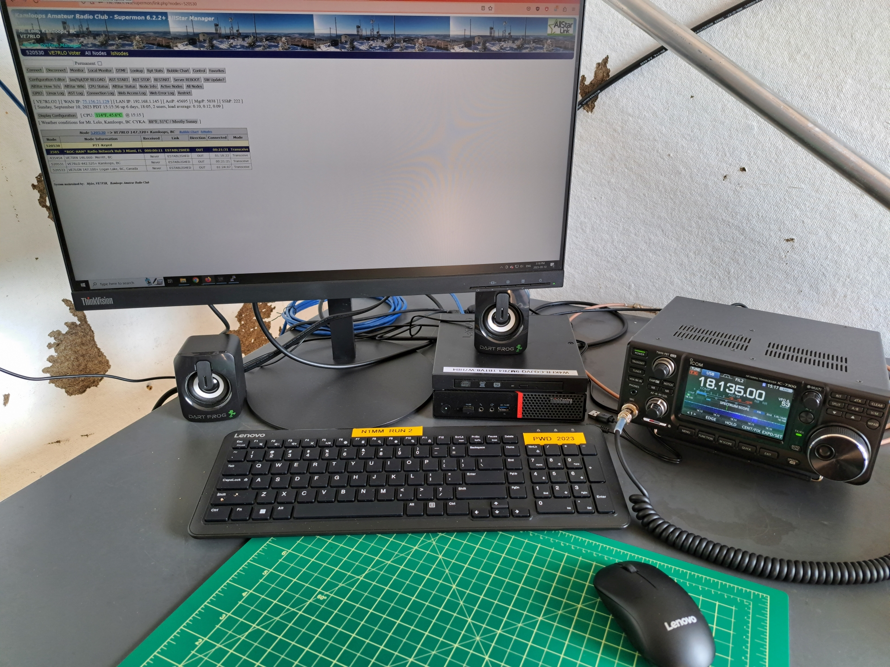
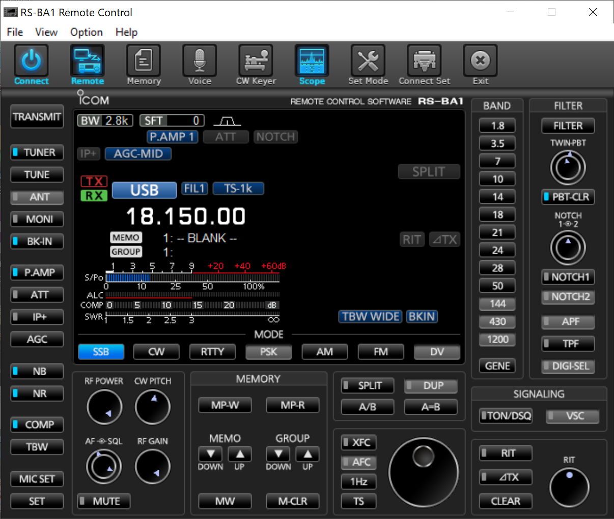
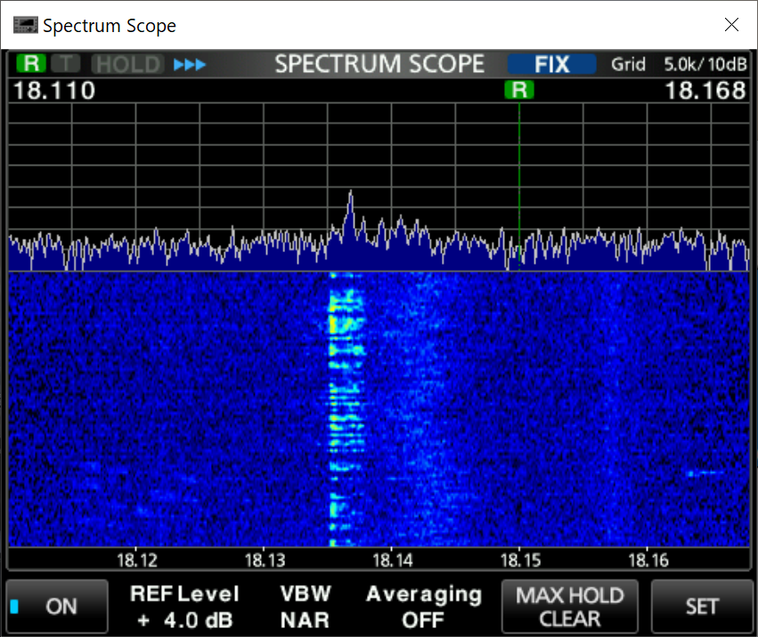
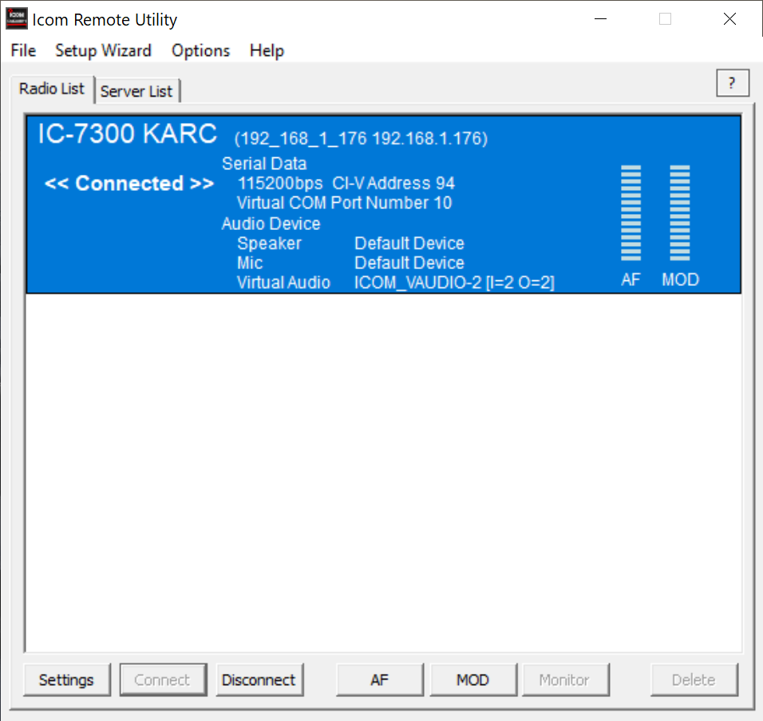
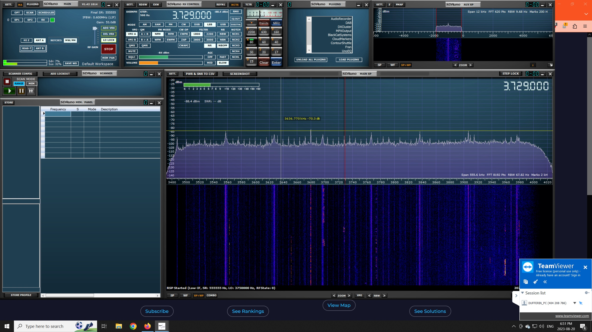
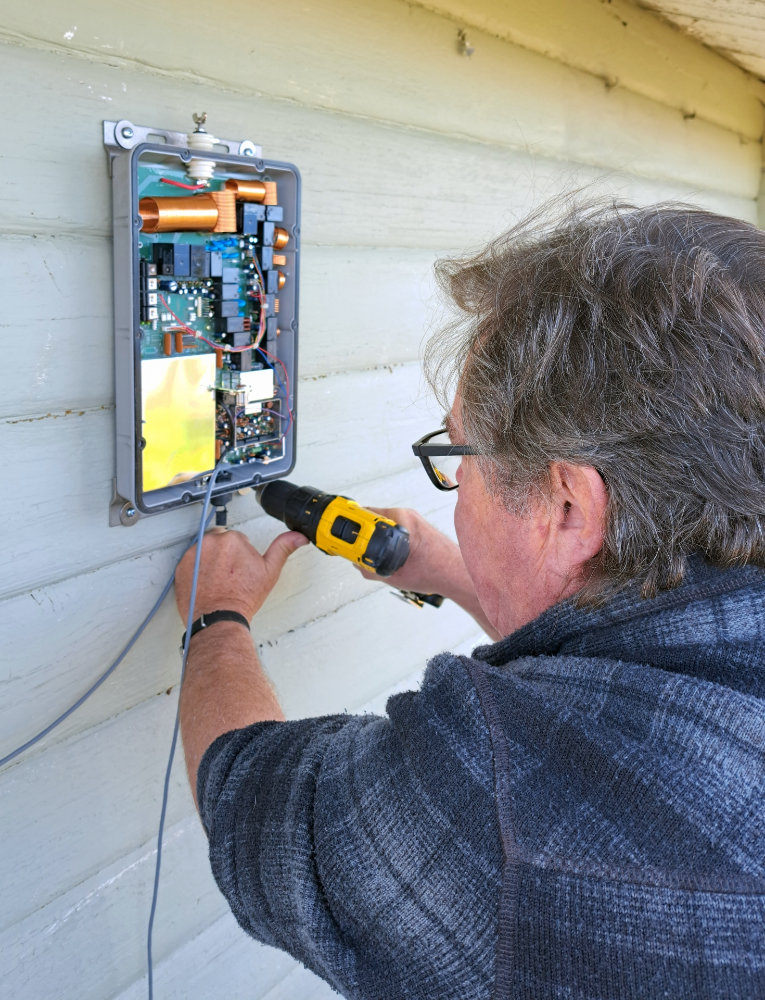
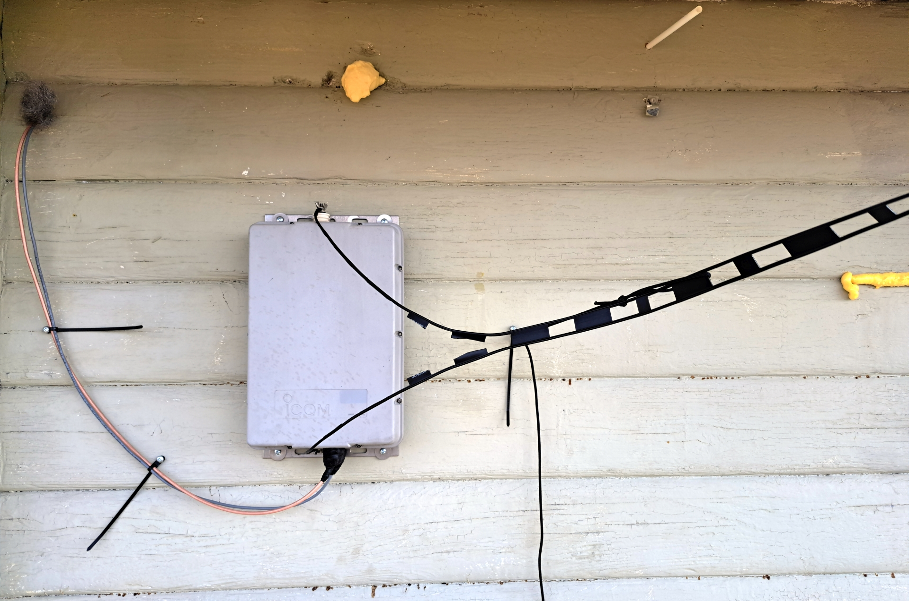
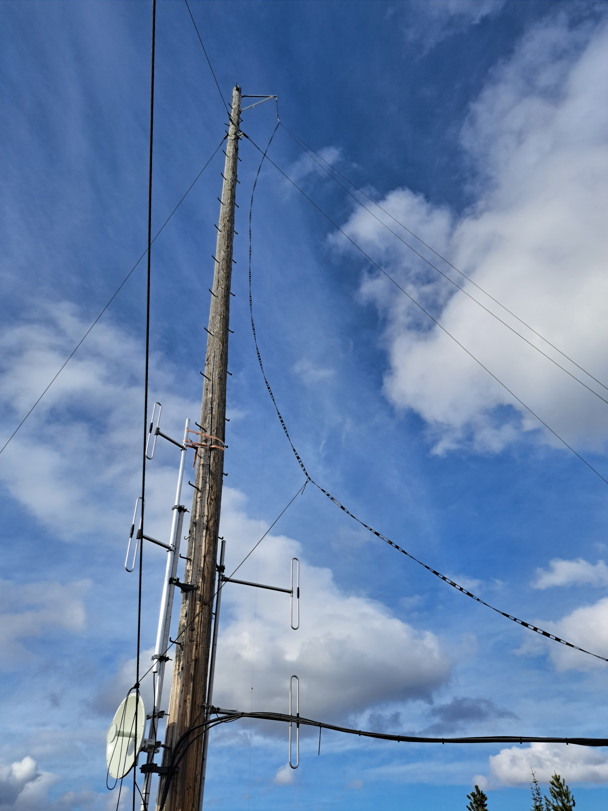
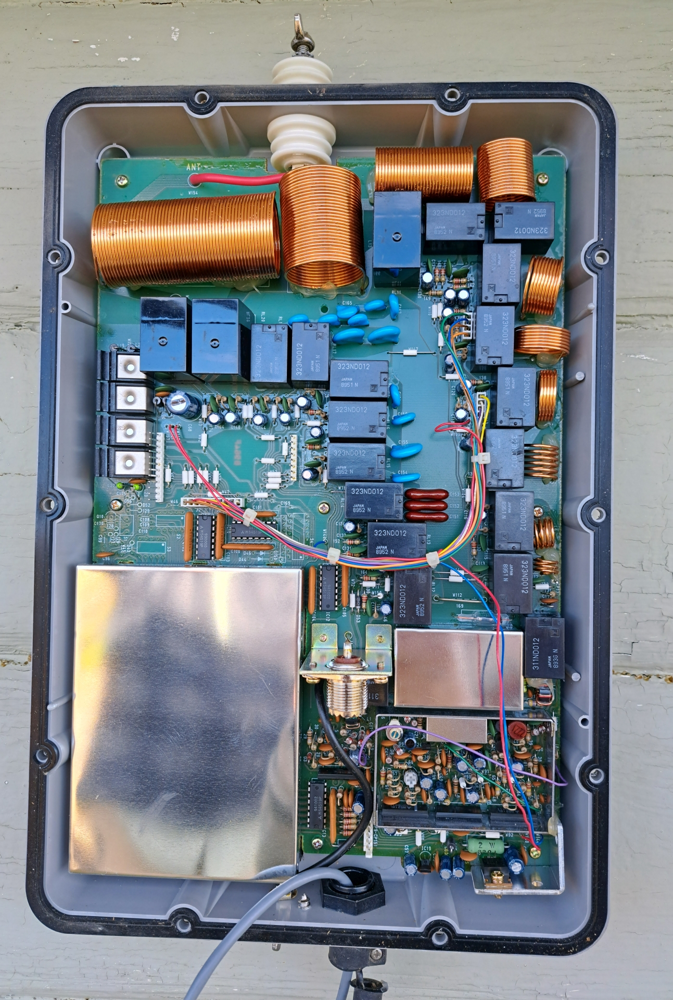

GOOD NEWS! The KARC now has a remote HF station!
Back to StoriesStory 754
Thu, 2023-09-14 19:08 — VE7FSR


We are pleased to announce that the club has installed a r emote HF station on Mt.
Lolo.
We are currently testing the Icom RS-BA1 remote control software with the club's Icom IC-7300 HF radio.
The RS-BA1 software runs unders Windows 10, and is opertating on a Lenovo ThinkCentre computer that was donated by Myles, VE7FSR.
Upgrades have been made to the microwave radio link to Lolo to ensure that we have sufficient internet bandwidth to successfully operate the remote HF station.
The HF antenna is an 80M off-centre-fed dipole supported at the top of the 50ft wood pole at the top of Lolo.
This gives us an overall antenna height of about 5750 feet above average terrain, which should make for terrific DX performance!

So far the testing has been positive (thank you to Mark VE7ARN and Dave VE7LTW our test squad) and the performance of the radio, antenna, and software has been very good.
We did have an issue with some nasty RFI when we first put up the HF antenna, and Ralph VA7VZA brought up his portable SDR receiver to do some "sniffing" while Myles VE7FSR turned stuff on and off in the shack.
We tracked down a very noisy Samlex switching power supply, which was then turned off and removed, with most of the noise going away.
There is a small source of noise on 17M, but not bad enough to block reasonable signals.
We have also noticed a higher than desired noise floor on 20M which Ralph and Myles will try to chase down in the coming weeks. (This appears to be coming from a bad insulator on the main power line, on the pole with the tansformers.
We have notified Nav Canada)

Thanks to Mark VE7ARN (our resident CW expert), we were able to determine that the OCF dipole has a high SWR on 30M and on the lower CW portion of the 80M bandplan, and the internal tuner of the IC-7300 is not able to find a match.
The original antenna was replaced by Myles VE7FSR and Ralph VA7VZA with an 80M dipole fed with ladderline and matched by an Icom AH-3 tuner mounted remotely outside the building.
The new antenna and remote tuner appears to work on all portions of the 80M band, and 30M as well.
More testing will let us know if the new antenna works as well as the former OCF dipole did.
Ferrite chokes (mix 31 and mix 75) were installed on the RG-400 coax and shielded control cable from the AH-3, immediately after the wires enter the building, This should help keep any RF from the antenna or ladderline from entering the building.

After we complete the test and evaluation phase of the new HF remote station, the station will be available to club members in good standing who possess the Advanced Qualification.
To help more people access this new club resource we will be holding an Advanced Qualification Course for club members interested in using the remote HF station.
Stay tuned for more information on the course -- if you are interested in attending the course please contact Myles VE7FSR at ve7fsr@telus.net We'd also like to thank Ian, VE7HHS for his awesome support and technical knowledge on setting up and managing remote HF stations, understanding codecs, and choosing suitable headsets.



